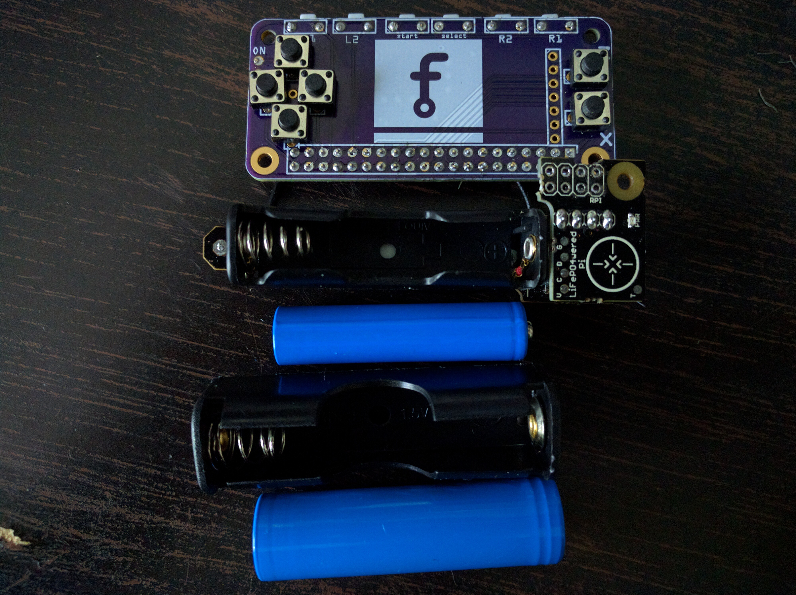

Honey, I Shrunk Our LiFePO4¶
Published on 2017-07-17 in Ye Olde Nowt.
Both the new PCB and the project-9461 arrived while I was away, so I can now get back to hacking. But what is this? It’s too long for the the Raspberry Pi Zero, as it was originally designed for the Raspberry Pi B, which is a little bit longer. But fear not, I anticipated that problem and ordered a smaller LiFePO4 battery, that should be just the right size. Now it’s just a matter of replacement of the battery basket:
I guess I will need to cut that PCB a little bit too. Oh well. I also removed the female headers from the power module, in order to solder it flat on top of the hat. Unfortunately, there is one pesky SMD resistor getting in the way there, so it won’t be completely flat.
In other news, I’m really happy with the through-hole buttons, they are much easier to solder and fit in that tight space – although I didn’t find color ones.
I still need to get a display for this – either order another one, or desolder one from the first prototype.